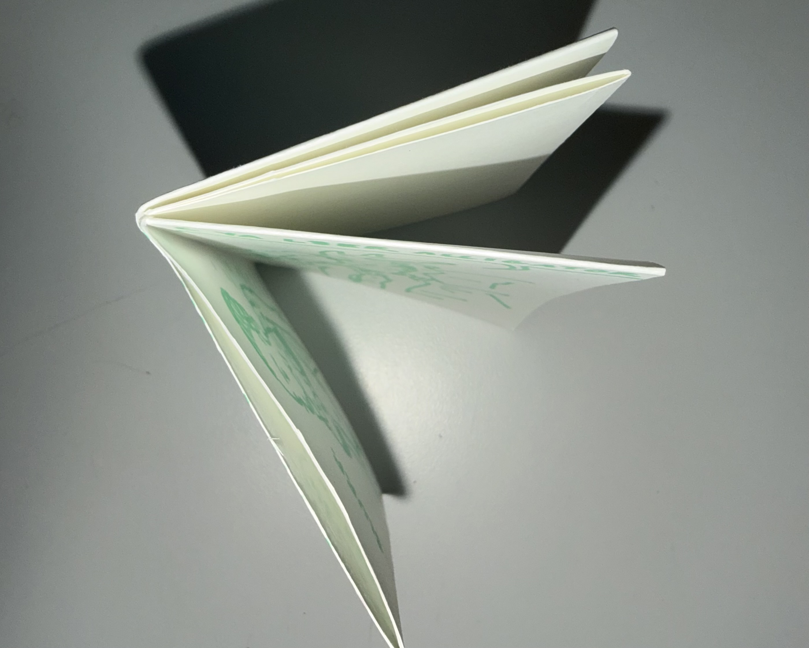
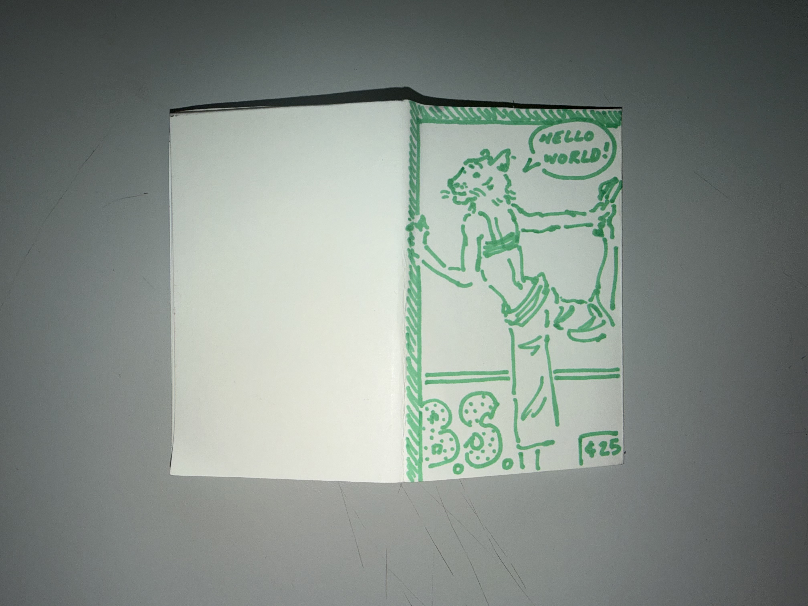

follow these simple steps to make your own one-page zine!
- gather (1) 8.5 by 11 sheet of paper, and a pair of scissors.
- fold the sheet of paper in half lengthwise. then press the fold to make a sharp crease with your finger.
- fold the sheet of paper in half again, this time crosswise. then press down to form a crease across the fold.
- fold in half once more, crosswise again. press down on the crease.
- unfold the sheet of paper to reveal all of your creases, then fold it in half crosswise.
- use your scissors to cut half way down the centre of the paper, starting on the side with the fold.
- unfold the sheet of paper once again.
- fold your sheet in half lengthwise, then hold the two ends of the paper and push them towards each other to form a plus sign.
- press down on all of the creases to ensure a flat and functional zine.
- enjoy!!! fill your zine however you'd like!!!
★ ★ ★ ★ ★ ★ ★ ★ ★ ★ ★
upload your zine to the gallery !!!